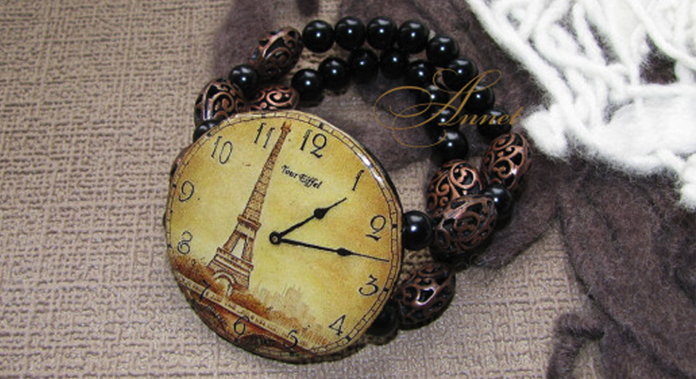

Заголовок Н1 Новая коллекция ручных часов
Наручные женские часы не только необходимость знания времени, но и элемент имиджа, предмет гордости, и украшение! Для женщин стало престижно иметь не одни часы, а несколько. Они ведь, несомненно, должны сочетаться с Вашим нарядом. Сплошная элегантность и роскошь, браслет и корпус инкрустированы стразами, застежка простая.
Он и ведь, несомненно, должны сочетаться с Вашим нарядом. Сплошная элегантность и роскошь, браслет и корпус инкрустированы стразами, застежка проста, удобна в применении.